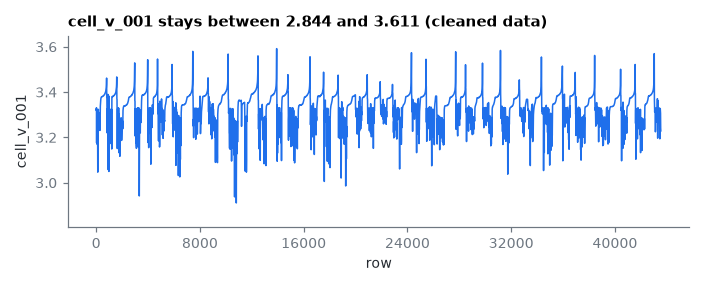
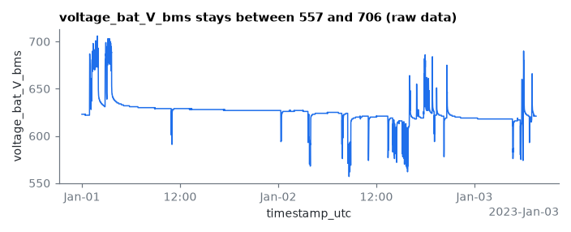

23 public releases of battery data recorded in real use: cars, buses, light electric vehicles, home and grid storage, phones and factory robots. Each was published by its authors with a paper or data record. This collection does not copy their files. It tells you where to download each release and gives one Python loader per release, so every release can be read the same way.
Get started
Install Python 3.12 or newer from python.org. The Python that comes with macOS is too old.
Get the code, make a virtual environment and install:
On a Mac, the first git command may offer to install Apple's command line tools, which takes several minutes. To skip git, use Code > Download ZIP on the GitHub page and unzip it.
Choose where the data goes. Copy the example settings file:
cp config/local.example.toml config/local.toml # on Windows: copy config\local.example.toml config\local.toml
Then open config/local.toml and replace the whole placeholder path PATH_TO_PUBLIC_BATTERY_DATA_HOLDINGS with your folder, keeping the quotes, for example data_root = "~/battery-data". If you skip this, downloads go to a data folder inside the repository.
Download one release (each card below says how), then check it by name:
python -m fielddata.doctor tsukuba
Without a name, doctor checks all 23 releases and lists every one you have not downloaded.
Open the quick-start notebook and run it from the top. It is set to cloverleaf, a second-life storage battery whose one 8 MB file downloads with one command; change RELEASE to the one you downloaded. If that release is not downloaded yet, the notebook prints the fetch command.
jupyter lab notebooks/quickstart.ipynb
In JupyterLab, choose Run > Restart Kernel and Run All Cells (or the double-arrow button in the notebook toolbar).
All releases
Values are the paper's Tables 1 and 2, generated from the repository. Licenses marked * restrict commercial use; ** state no license. Service time is unit-years where the release has timestamps, otherwise a lower bound in hours. Where a release's count differs from its paper, the paper's count is in brackets. Download says how each release downloads as of October 2026: one command, manual in a web browser, or partly manual (ppl, whose cell-level data is on a Box share).
23 of 23 loaders loaded their quick-start slice on the full holdings (2026-10-02, 2026-10-03, 2026-10-06). Each preview is drawn from the release by its loader. Where a release restricts commercial use or states no license, the preview says so.
tsukuba
Multiyear microgrid data from a research building in Tsukuba, Japan
Field data from 1 home or building storage system in Japan with lead-acid cells, released with Vink, Ankyu and Koyama, Scientific Data. The release covers 3.3 unit-years of operation and about 0.326 MWh of battery energy (stated).
Loader verified 2026-10-02691,200 rows, 12 columns in the sample slice
battery_dc_voltage stays between 316.6 and 401.1 (raw data). One unit, quick-start slice, one point in every 173 drawn. Plotted data (CSV).
aitio
Predicting battery end of life from solar off-grid system field data using machine learning
Field data from 1,027 home or building storage systems in sub-Saharan Africa with lead-acid cells, released with Aitio and Howey, Joule. The release covers 1,665.0 unit-years of operation and about 0.246 MWh of battery energy (computed).
Loader verified 2026-10-06787,789 rows, 4 columns in the sample slice
Download
One command (as of October 2026), from Oxford ORA:
python -m fielddata.fetch aitio
2.9 GB, slow host (Oxford ORA), allow ~15 min. Each file prints when it is done.
voltage_V stays between 11.55 and 14.53 (cleaned data). One unit, quick-start slice, one point in every 197 drawn. Plotted data (CSV). The figure and CSV are derived from this release and carry its license, CC BY-NC 4.0, for non-commercial use only.
cloverleaf
Monitoring data second-life battery at Cloverleaf
Field data from 3 second-life battery packs of one building storage system in Belgium with NMC-class cells, released with a public data record. The release covers 1.0 unit-years of operation and about 0.08 MWh of battery energy (computed).
Loader verified 2026-10-02521 rows, 10 columns in the sample slice
Vpack stays between 349 and 398.1 (raw data). One unit, quick-start slice. Plotted data (CSV).
evbattery
EVBattery - Large-Scale EV Dataset for Battery Health & Capacity
Field data from 464 passenger electric vehicles in China with NMC-class cells, released with He et al., arXiv. The release covers at least 57,265 h of operation.
Loader verified 2026-10-02258,176 rows, 14 columns in the sample slice
volt stays between 3.636 and 3.912 (raw data). One unit, quick-start slice. Plotted data (CSV). The figure and CSV are derived from this release and carry its license, CC BY-NC-SA 4.0, for non-commercial use only.
deng
Prognostics of battery capacity based on charging data for on-road vehicles
Field data from 20 passenger electric vehicles in China with NMC cells, released with Deng et al., Applied Energy. The release covers 46.2 unit-years of operation and about 0.953 MWh of battery energy (computed).
Loader verified 2026-10-02854,591 rows, 11 columns in the sample slice
pack_voltage stays between 314.7 and 386.2 (raw data). One unit, quick-start slice, one point in every 214 drawn. Plotted data (CSV).
flashbattery-agv
Automated Battery Power Fade Estimation for Fast Charge/Discharge
Field data from 10 automated guided vehicle packs in Italy with Li-ion cells, released with Zarfati and Bedogni, IEEE CCNC. The release covers 2.1 unit-years of operation.
Loader verified 2026-10-024,221 rows, 6 columns in the sample slice
cycletime stays between 0 and 1.44e+04 (raw data). One unit, quick-start slice, one point in every 2 drawn. Plotted data (CSV).
zhang2023
Realistic fault detection of Li-ion battery via dynamical deep learning approach
Field data from 347 passenger electric vehicles in China with NMC-class cells, released with Zhang et al., Nature Communications. The release covers at least 45,030 h of operation.
Loader verified 2026-10-02350,208 rows, 13 columns in the sample slice
max_single_volt stays between 3.534 and 3.609 (raw data). One unit, quick-start slice. Plotted data (CSV).
bilfinger2024
Battery pack diagnostics for EVs: Transfer of differential voltage and incremental capacity
Field data from 2 passenger electric vehicles in Germany with NMC, LFP cells, released with Bilfinger et al., eTransportation. The release covers 3.2 unit-years of operation and about 0.111 MWh of battery energy (stated).
Loader verified 2026-10-0220,738 rows, 118 columns in the sample slice
Download
Manual, in a web browser (as of October 2026), from mediaTUM. The fetch command prints these steps:
bilfinger2024 requires a manual download.
1. Open https://mediatum.ub.tum.de/1737452
2. Download the data files listed below. Do not download papers.
- data.zip (about 0.3 GB)
Note: data.zip is the "Download all" zip of the mediaTUM data-server share linked from the record.
3. Save the files under data/Battery pack diagnostics for electric vehicles - Transfer of differential voltage and incremental capacity analysis from cell to vehicle level/data
4. Run python -m fielddata.verify bilfinger2024 to check the saved files.
U stays between 325.7 and 365.6 (raw data). One unit, quick-start slice, one point in every 6 drawn. Plotted data (CSV).
fei_bus
Real EV dataset - Commercial Electric Buses
Field data from 4 electric buses (country not stated), released with a public data record. The release has no timestamps, so the time it covers is not known.
Loader verified 2026-10-02101 rows, 4 columns in the sample slice
Download
Manual, in a web browser (as of October 2026), from Mendeley Data. The fetch command prints these steps:
fei_bus requires a manual download.
1. Open https://doi.org/10.17632/j9ky68gnd3.3
2. Download the data files listed below. Do not download papers.
- vin1.csv (2,366 bytes)
- vin5.csv (3,791 bytes)
- vin12.csv (7,723 bytes)
- vin19.csv (1,667 bytes)
3. Save the files under data/Real EV dataset - Commercial Electric Buses/data
4. Run python -m fielddata.verify fei_bus to check the saved files.
Field data from 10 grid-scale storage units in Germany with LMO/NMC, LFP, LTO, lead-acid cells, released with Evaluation operation report, RWTH Publications. The release covers 0.7 unit-years of operation and about 6.714 MWh of battery energy (stated).
Loader verified 2026-10-022,592,000 rows, 13 columns in the sample slice
Download
Manual, in a web browser (as of October 2026), from RWTH Publications. The fetch command prints these steps:
m5bat-2023-04 requires a manual download.
1. Open https://publications.rwth-aachen.de/record/985923
2. Download the data files listed below. Do not download papers.
- M5BAT_04-2023_RAW.zip (about 0.1 GB)
Note: RWTH Publications needs a web browser; its download links do not work from a script.
3. Save the files under data/M5BAT Large-Scale Battery Storage System Dataset - Evaluation Operation Report 04-2023/data
4. Run python -m fielddata.verify m5bat-2023-04 to check the saved files.
U_DC_Batt stays between 5597 and 7171 (raw data). One unit, quick-start slice, one point in every 648 drawn. Plotted data (CSV).
rwth-home
Multi-year field measurements of home storage systems & capacity estimation
Field data from 21 home or building storage systems in Germany with LFP, LMO/NMC, NMC cells, released with Figgener et al., Nature Energy. The release covers 120.1 unit-years of operation and about 0.153 MWh of battery energy (stated).
Loader verified 2026-10-02521,849 rows, 7 columns in the sample slice
V_in_V stays between 131.2 and 165.3 (raw data). One unit, quick-start slice, one point in every 131 drawn. Plotted data (CSV).
schaeffer
Gaussian process-based online health monitoring and fault analysis from field data
Field data from 28 home or building storage systems (country not stated) with LFP cells, released with Schaeffer et al., Cell Reports Physical Science. The release covers 56.9 unit-years of operation and about 0.108 MWh of battery energy (computed).
Loader verified 2026-10-02500,000 rows, 26 columns in the sample slice
U_Battery stays between 24.14 and 28.47 (raw data). One unit, quick-start slice, one point in every 125 drawn. Plotted data (CSV). The figure and CSV are derived from this release and carry its license, CC BY-NC 4.0, for non-commercial use only.
cao
Model-Constrained Deep Learning for Online Fault Diagnosis in Li-ion Batteries over Stochastic Conditions
Field data from 514 passenger electric vehicles in China with NMC-class, LFP cells, released with Cao et al., Nature Communications. The release covers at least 151,900 h of operation and about 15.107 MWh of battery energy (computed).
Loader verified 2026-10-0343,546 rows, 225 columns in the sample slice
In-depth notebook: a worked example of a release published without column names, units or timestamps.

cell_v_001 stays between 2.844 and 3.611 (cleaned data). One unit, quick-start slice, one point in every 11 drawn. Plotted data (CSV).
changan
Multi-modal framework for battery SOH evaluation using open-source EV data
Field data from 300 passenger electric vehicles in China with NMC cells, released with Liu et al., Nature Communications. The release covers 975.4 unit-years of operation and about 16.294 MWh of battery energy (computed).
Loader verified 2026-10-02200,000 rows, 13 columns in the sample slice
Download
Manual, in a web browser (as of October 2026), from Changan portal. The fetch command prints these steps:
changan requires a manual download.
1. Open http://ivstskl.changan.com.cn/?p=2697
2. Download the data files listed below. Do not download papers.
- raw/RAW_DATA.z01 (about 51.5 GB)
- raw/RAW_DATA.zip (about 22.8 GB)
Note: the two files are one split zip of about 74 GB (RAW_DATA.z01 51.5 GB, RAW_DATA.zip 22.8 GB); check you have the space first.
Note: save both in a subfolder named raw inside the folder in step 3 (create it), and do not unzip them.
3. Save the files under data/Multi-modal framework for battery state of health evaluation using open-source electric vehicle data/data
4. Run python -m fielddata.verify changan to check the saved files.
totalvoltage stays between 330 and 406.9 (cleaned data). One unit, quick-start slice, one point in every 50 drawn. Plotted data (CSV). The figure and CSV are derived from this release and carry its license, CC BY-NC-SA 4.0, for non-commercial use only.
ku_leuven_bev
Unveiling Energy Dynamics of Battery Electric Vehicle Using High-Resolution Data
Field data from 2 passenger electric vehicles in Belgium with LFP, NCA cells, released with Yasko et al., Scientific Data. The release covers 1.8 unit-years of operation and about 0.139 MWh of battery energy (stated).
Loader verified 2026-10-02773,172 rows, 36 columns in the sample slice
Download
Manual, in a web browser (as of October 2026), from KU Leuven RDR. The fetch command prints these steps:
ku_leuven_bev requires a manual download.
1. Open https://doi.org/10.48804/8KPDTW
2. Download the data files listed below. Do not download papers.
- doi-10.48804-8kpdtw.zip (about 0.2 GB)
Note: the zip is Dataverse's "Access dataset > Download ZIP" on the KU Leuven RDR page.
3. Save the files under data/Unveiling Energy Dynamics of Battery Electric Vehicle Using High-Resolution Data/data
4. Run python -m fielddata.verify ku_leuven_bev to check the saved files.
BattVoltage132 stays between 285.8 and 386.7 (raw data). One unit, quick-start slice, one point in every 194 drawn. Plotted data (CSV).
tumftm
Lab-to-field gap in battery aging: Mismatch of operating conditions
Field data from 7 passenger electric vehicles in Germany with NMC cells, released with Schreiber et al., eTransportation. The release covers 6.7 unit-years of operation and about 0.406 MWh of battery energy (stated).
Loader verified 2026-10-025,282,082 rows, 6 columns in the sample slice
value stays between 0 and 8588 (cleaned data). One unit, quick-start slice, one point in every 1,321 drawn. Plotted data (CSV). The figure and CSV are derived from this release and carry its license, CC BY-NC 4.0, for non-commercial use only.
bilfinger2026
Battery pack diagnostics for EVs: Robustness of SOH and differential voltage
Field data from 7 passenger electric vehicles in Germany with NMC, LFP cells, released with Bilfinger et al., eTransportation. The release covers 0.3 unit-years of operation and about 0.401 MWh of battery energy (stated).
Loader verified 2026-10-0279,591 rows, 117 columns in the sample slice
Download
Manual, in a web browser (as of October 2026), from mediaTUM. The fetch command prints these steps:
bilfinger2026 requires a manual download.
1. Open https://mediatum.ub.tum.de/1840112
2. Download the data files listed below. Do not download papers.
- data.zip (about 0.3 GB)
Note: data.zip is the "Download all" zip of the mediaTUM data-server share linked from the record.
3. Save the files under data/Battery pack diagnostics for electric vehicles - Robustness of the state of health measurement and differential voltage analysis at the vehicle level/data
4. Run python -m fielddata.verify bilfinger2026 to check the saved files.
U stays between 358.2 and 454 (raw data). One unit, quick-start slice, one point in every 20 drawn. Plotted data (CSV).
li2026
Large language model-based fault diagnosis for Li-ion batteries in cloud-edge systems
Field data from 1 grid-scale storage unit (country not stated) with LFP cells, released with Li et al., Cell Reports Physical Science. The release covers 1,203 h of operation and about 0.156 MWh of battery energy (computed).
Loader verified 2026-10-0231,960 rows, 18 columns in the sample slice
cell_001_V stays between 3.131 and 3.436 (raw data). One unit, quick-start slice, one point in every 8 drawn. Plotted data (CSV).
m5bat-pbacid
Operational Degradation of Flooded Lead-Acid Under FCR: Long-Term Evidence
Field data from 1 grid-scale storage unit in Germany with lead-acid cells, released with Zurmühlen, Koltermann and Sauer, Energies. The release covers 8.1 unit-years of operation and about 1.066 MWh of battery energy (stated).
Loader verified 2026-10-02200,000 rows, 8 columns in the sample slice
Download
Manual, in a web browser (as of October 2026), from RWTH Publications. The fetch command prints these steps:
m5bat-pbacid requires a manual download.
1. Open https://publications.rwth-aachen.de/record/1038622
2. Download the data files listed below. Do not download papers.
- Full_Dataset_M5BAT_Battery_Unit_Pb1.zip (4.33 GB (page display))
Note: RWTH Publications needs a web browser; its download links do not work from a script.
3. Save the files under data/Operational Degradation of Flooded Lead-Acid Storage Under Frequency Containment Reserve/data
4. Run python -m fielddata.verify m5bat-pbacid to check the saved files.
Load a first slice
from fielddata.loaders import m5bat_pbacid
frame = m5bat_pbacid.preview(source='bms', year=2023, rows=200000)
frame.head()

voltage_bat_V_bms stays between 557 and 706 (raw data). One unit, quick-start slice, one point in every 50 drawn. Plotted data (CSV).
ppl
Utility-Scale Battery Energy Storage Systems - Field Pilot Unit Experience
Field data from 1 grid-scale storage unit in United States with Li-ion cells, released with Kyeremeh et al., IEEE Access. The release covers 8.3 unit-years of operation and about 2 MWh of battery energy (stated).
Loader verified 2026-10-02525,600 rows, 19 columns in the sample slice
Download
Partly manual (as of October 2026). One command downloads the files on GitHub:
python -m fielddata.fetch ppl
The command then prints the manual step for the rest:
ppl is only partly downloaded by this command. One more step is manual:
The cell-level data (about 66.6 GB, one zip per month from December 2016) is not in the GitHub repository.
The repository's file BESS-Analysis/Cell_Level_Data links to it on a Box share:
https://app.box.com/s/s0ns2o1i4q0f7yxcnn96df7e5px5k0s6
Download the monthly zips in a web browser and save them in a folder named cell_level next to BESS-Analysis.
The ppl loader reads only the GitHub files, so this step is needed only to use the cell-level data yourself.
CellVoltAvg stays between 0 and 4.129 (raw data). One unit, quick-start slice, one point in every 132 drawn. Plotted data (CSV). The authors state no license for this data; the figure and CSV are shown for orientation only.
rwth-android
Battery Cell Field Data of Multiple Mobile Android Devices
Field data from 33 mobile phones in Germany with Li-ion cells, released with Laufen et al., RWTH Publications. The release covers 3.5 unit-years of operation and about 0.001 MWh of battery energy (computed).
Loader verified 2026-10-0232,038 rows, 19 columns in the sample slice
Download
Manual, in a web browser (as of October 2026), from RWTH Publications. The fetch command prints these steps:
rwth-android requires a manual download.
1. Open https://publications.rwth-aachen.de/record/1002905
2. Download the data files listed below. Do not download papers.
- Dataset_from_Mobile_Battery_Data_Explorer_2026-04.zip (about 76.1 MB)
Note: RWTH Publications needs a web browser; its download links do not work from a script.
3. Save the files under data/Battery Cell Field Data of Multiple Mobile Android Devices/data
4. Run python -m fielddata.verify rwth-android to check the saved files.
voltage_cell stays between 3.627 and 4.537 (raw data). One unit, quick-start slice, one point in every 9 drawn. Plotted data (CSV).
xie
Realistic multi-fault diagnostics of millions-scale Li-ion batteries with rapid unsupervised learning
Field data from 271 light electric vehicle packs (country not stated) with LFP cells, released with Xie et al., Cell Reports Physical Science. The release covers 4.8 unit-years of operation.
Loader verified 2026-10-0228 rows, 28 columns in the sample slice
batCoreVoltage1 stays between 3224 and 3389 (raw data). One unit, quick-start slice. Plotted data (CSV).
zhou2026
Quantifying the impact of cell-to-cell inconsistency on EV battery degradation & utilization
Field data from 3 units in China with NMC, LFP cells, released with Zhou et al., Nature Energy. The release covers 10.4 unit-years of operation and about 0.209 MWh of battery energy (stated).
Loader verified 2026-10-02255,909 rows, 6 columns in the sample slice
Download
Manual, in a web browser (as of October 2026), from OneDrive. The fetch command prints these steps:
zhou2026 requires a manual download.
1. Open https://1drv.ms/u/c/909aeacce295a32a/IQCsGxZgHovYTqJEXhfqRIIZAWASy12k6Urytil7VPa0LJY?e=ISLuvO
2. Download the data files listed below. Do not download papers.
- Vehicle data.zip (about 2.2 GB)
3. Save the files under data/Quantifying the impact of cell-to-cell inconsistency on electric vehicle battery degradation and utilization/data
4. Run python -m fielddata.verify zhou2026 to check the saved files.
TotalVoltage stays between 100 and 563.3 (raw data). One unit, quick-start slice, one point in every 64 drawn. Plotted data (CSV). The authors state no license for this data; the figure and CSV are shown for orientation only.